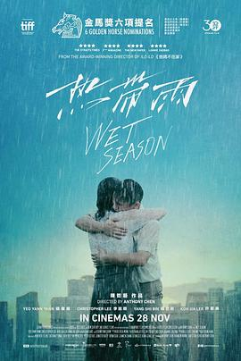

热带雨
又名：Wet Season
28th SIFF，雨作为重要意象贯穿屏幕，的确给我带来了难忘的观影体验。老人与孩子的梦色调晕蓝，与“笑”一同压力了老师。而老师与学生本质是无处安放的母爱的代偿，最终学生对情感的单薄认知导致了他们畸形的爱情。倒是最后意料之内的怀上了是否说明了老公这几年捐的也许是假精呢，不想要可以直说，这样单纯地老师做什么呢，肚皮都淤紫了。陈导还真喜欢这样的拧巴情感。
作品信息
| 导演 | 陈哲艺 |
| 编剧 | 陈哲艺 |
| 主演 | 杨雁雁 / 许家乐 / 李铭顺 / 杨世彬 / 朱秀凤 / 陆豪仪 / 黄嫊芳 |
| 类型 | 剧情 / 爱情 |
| 制片国家/地区 | 新加坡 / 中国台湾 / 中国大陆 |
| 语言 | 汉语普通话 / 英语 / 闽南语 |
| 上映日期 | 2019-09-08(多伦多电影节) / 2019-11-28(新加坡) |
| 片长 | 103分钟 |
| IMDb | tt9822706 |
说过什么
2026-06-20 22:51:14
广播 · 看过 · ★★★★☆
28th SIFF，雨作为重要意象贯穿屏幕，的确给我带来了难忘的观影体验。老人与孩子的梦色调晕蓝，与“笑”一同压力了老师。而老师与学生本质是无处安放的母爱的代偿，最终学生对情感的单薄认知导致了他们畸形的爱情。倒是最后意料之内的怀上了是否说明了老公这几年捐的也许是假精呢，不想要可以直说，这样单纯地老师做什么呢，肚皮都淤紫了。陈导还真喜欢这样的拧巴情感。
最后一次看到是 2026-10-07T23:12:44+08:00 · 豆瓣原页